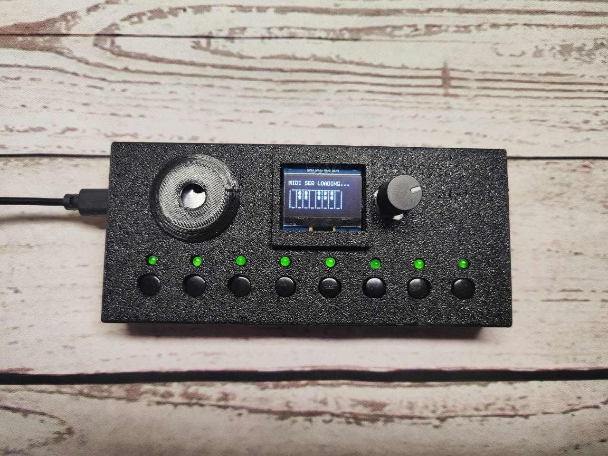
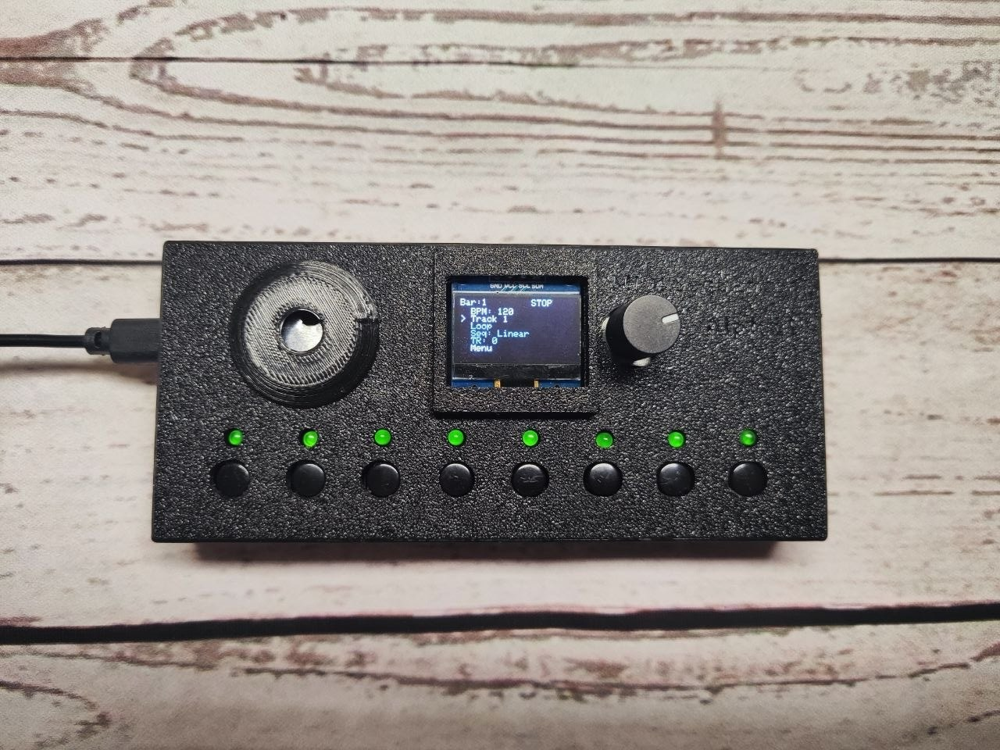
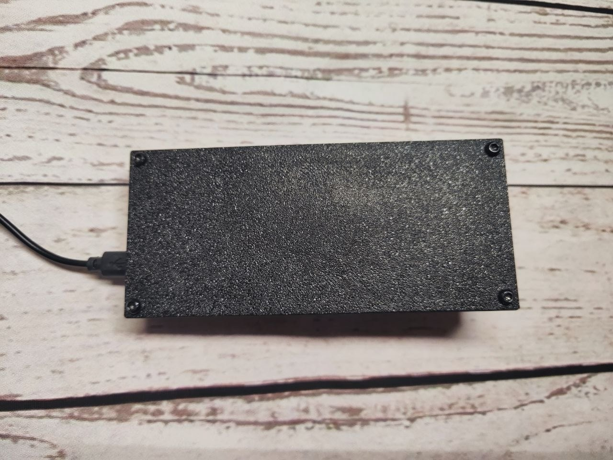
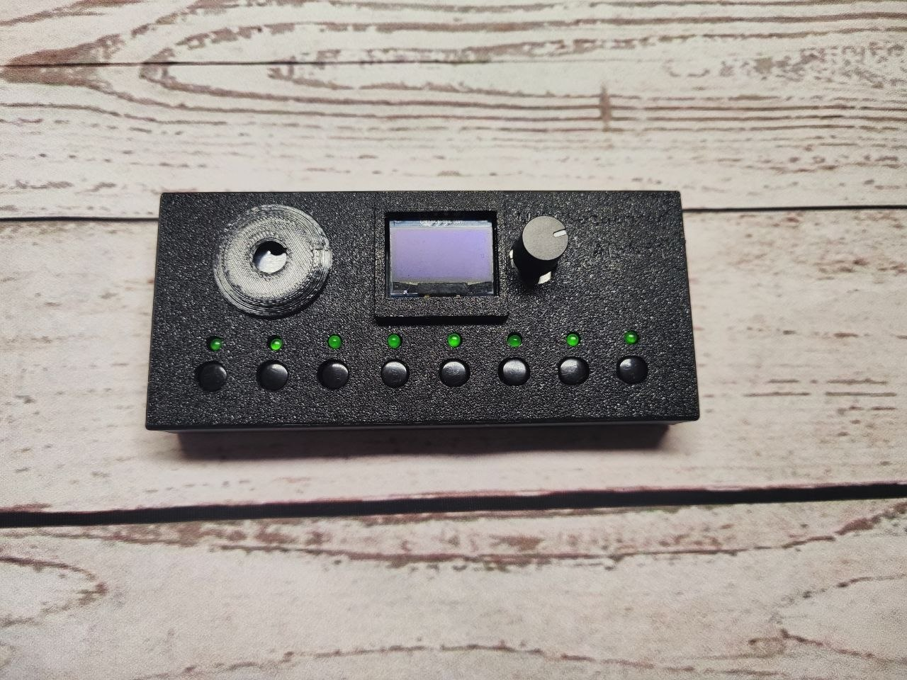

Real-Time MIDI Sequencer & MIDI Looper

Alpha1 — аппаратный MIDI-секвенсор и MIDI-лупер, ориентированный на живое исполнение.
В отличие от классических step-секвенсоров, Alpha1 записывает MIDI непосредственно во время игры, позволяя быстро создавать музыкальные партии без использования piano roll или step-grid.
Проект полностью разрабатывается как Open Source и продолжает активно развиваться.



Автор:
Michael Sinitsin
📧 sinitsinmike@yahoo.com
📧 michaelsinitsin@mail.ru
📞 +7 (985) 604-10-70
Telegram: @Miharussian
Telegram группа: @SamodelnieSintezotory
VK: michaelsinitsin